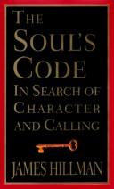

The Soul's Code: In Search of Character and Calling
Book·James Hillman, 1996·灵魂密码

Hillman uses the "acorn theory" to discuss each person's calling. It is an interpretive and reflective book.
- Author
- James Hillman
- Year
- 1996
- Difficulty
- Intermediate
- Kind
- Primary text
- Schools
- Post-Jungian and Archetypal Psychology
- Core theories
- Archetypal Psychology
Editions
- Chinese edition 《灵魂的密码》 [美]詹姆斯·希尔曼 · tr. 朱松 译 / 杨曦 校 / 杨曦 · 商务印书馆 · 2015 Douban 7.7 (53 ratings) Douban page ↗
- English edition The Soul's Code: In Search of Character and Calling James Hillman · Random House, first edition · 1996 Open Library ↗